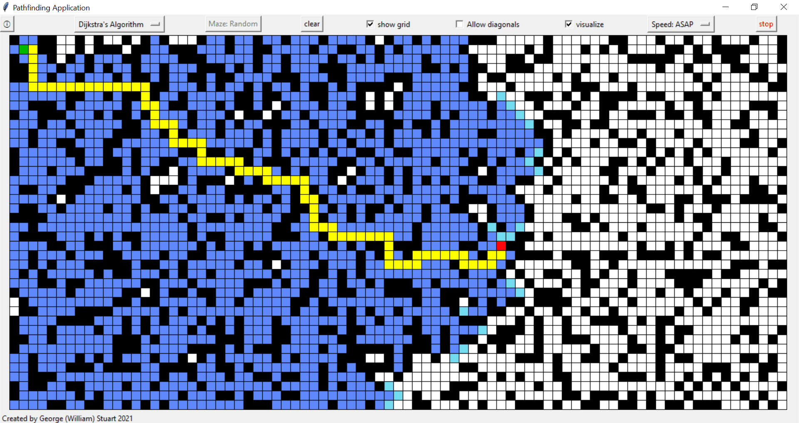
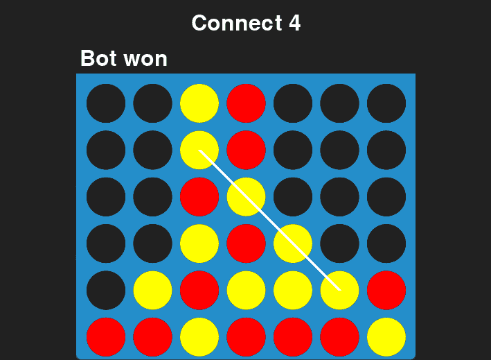
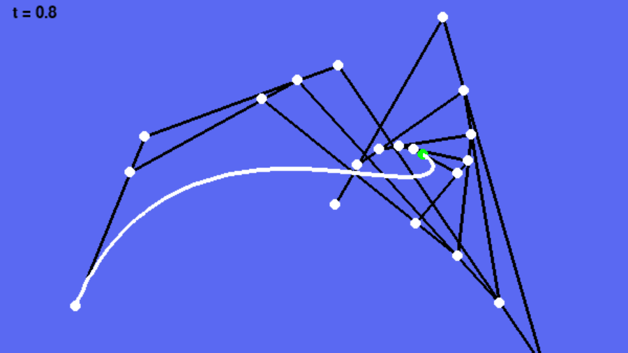
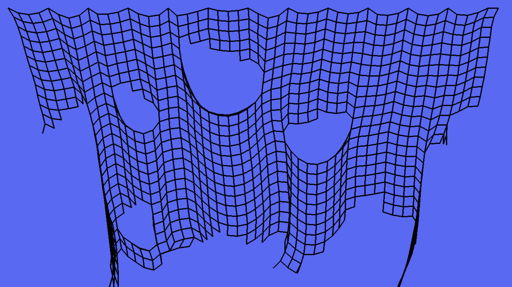
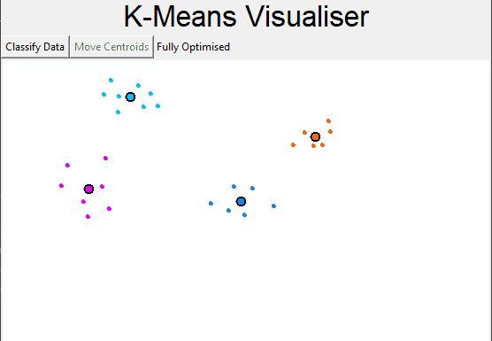
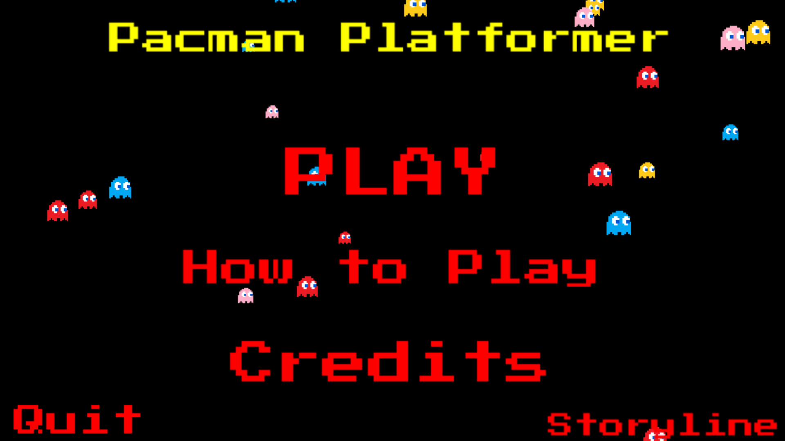
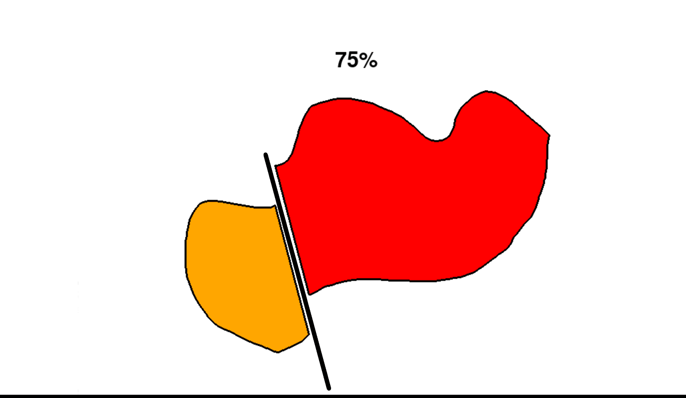
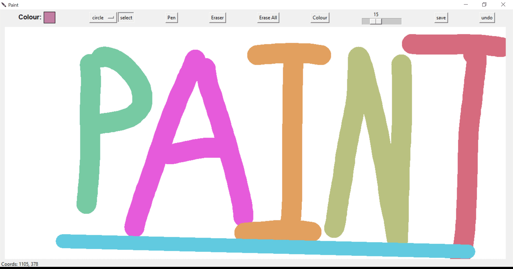
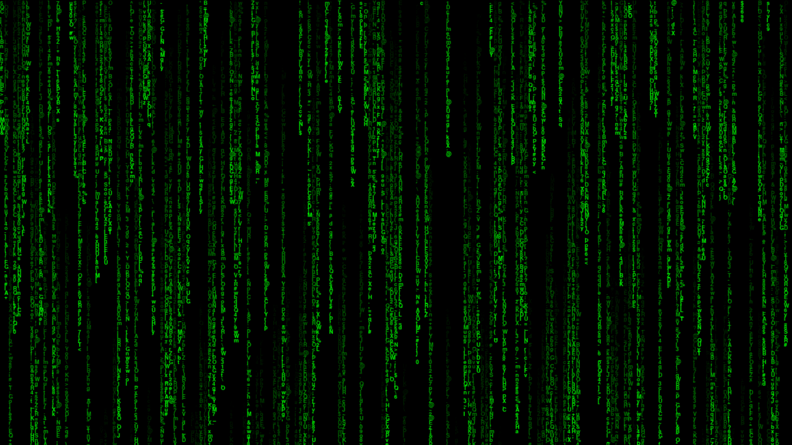

Pman
A CLI stateless password manager written in python. A simplified web version was also written in JavaScript and can be used by clicking on the link below.
View Project

View Project
Pathfinder
A pathfinder that will find and visually display the shortest path between any two given points. The user has the choice of either using A* Search or Dijkstra's Algorithm and has a variety of options available.
View Project

Pathfinder Explanation
This project is a visual way of understanding how the pathfinding algorithms A* Search and Dijkstra's Algorithm work. This projects walks the user through the step by step process of both algorithms.
View Project

View Project
Connect 4
An AI bot that you can compete against in Connect 4. The bot was implemented using the Minimax AI algorithm. The AI works quite effectively and can looks 7 movies into the future (although this value can be changed to suit the user's needs).
View Project
Barnsley Fern
A program the procedurally generates a barnsley fern, an infinitely repeating fractal.
View Project

View Project
Bezier Curves
Bezier curves are smooth curves commonly used in computer graphics and are defined by a series of points. In this program the user can add points and the program helps to visualise how a bezier curve is drawn with those points
View Project

View Project
Verlet Integration
A physics simulator created using verlet integration. With a simple GUI this application enables users to add and create points and apply rope physics to them. The project can also handle some pretty cool cloth simulations.
View Project

View Project
K Means Visualiser
A program that helps to visualise the machine learning algorithm K-Means. K-Means is an unsupervised machine learning algorithm that clusters data into K groups defined by a series of centroids (a central point within the cluster).
View Project

View Project
Pacman Platformer
A pacman inspired platformer game. This was made for a school project and includes a level designer where the user can create and save their own custom levels.
View Project

View Project
Shape Cutting
Simple program that allows users to make a custom shape which they can then cut into parts.
View Project

View Project
Paint
This fun project is a simple paint tool with basic functionality such as drawing, pre-built shapes and a wide range of available colours. The project also uses a flood fill algorithm to colour a region drawn by the user.
View Project
